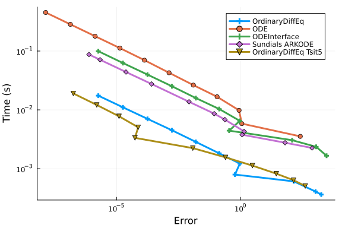
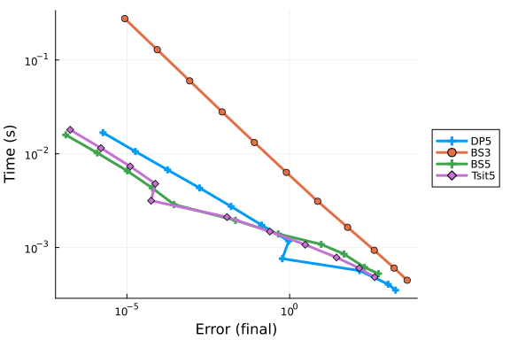
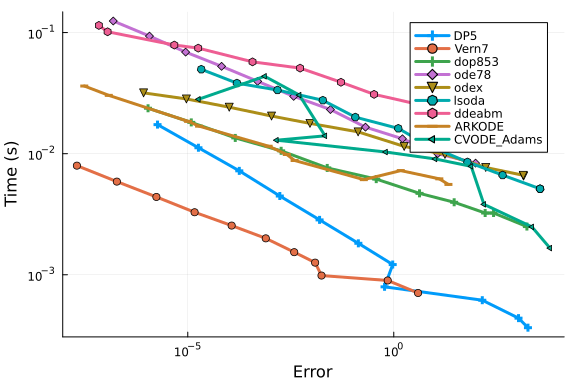
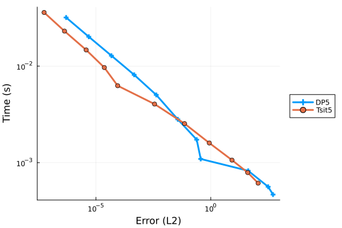
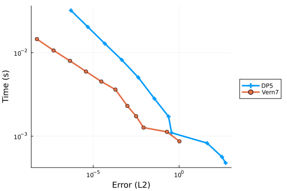
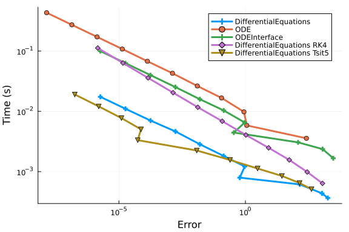
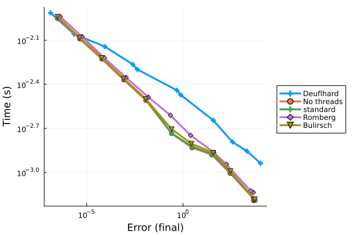

For these tests we will solve a diagonal 100 independent linear differential equations. This will demonstrate the efficiency of the implementation of the methods for handling large systems, since the system is both large enough that array handling matters, but f is cheap enough that it is not simply a game of calculating f as few times as possible. We will be mostly looking at the efficiency of the work-horse Dormand-Prince Order 4/5 Pairs: one from DifferentialEquations.jl (DP5), one from ODE.jl rk45, one from ODEInterface (Hairer's famous dopri5, and one from SUNDIALS' ARKODE suite.
Also included is Tsit5. While all other ODE programs have gone with the traditional choice of using the Dormand-Prince 4/5 pair as the default, DifferentialEquations.jl uses Tsit5 as one of the default algorithms. It's a very new (2011) and not widely known, but the theory and the implimentation shows it's more efficient than DP5. Thus we include it just to show off how re-designing a library from the ground up in a language for rapid code and rapid development has its advantages.
Setup
using OrdinaryDiffEq, Sundials, DiffEqDevTools, Plots, ODEInterfaceDiffEq, ODE, LSODA
using Random
Random.seed!(123)
gr()
# 2D Linear ODE
function f(du,u,p,t)
@inbounds for i in eachindex(u)
du[i] = 1.01*u[i]
end
end
function f_analytic(u₀,p,t)
u₀*exp(1.01*t)
end
tspan = (0.0,10.0)
prob = ODEProblem(ODEFunction(f,analytic=f_analytic),rand(100,100),tspan)
abstols = 1.0 ./ 10.0 .^ (3:13)
reltols = 1.0 ./ 10.0 .^ (0:10);Speed Baseline
First a baseline. These are all testing the same Dormand-Prince order 5/4 algorithm of each package. While all the same Runge-Kutta tableau, they exhibit different behavior due to different choices of adaptive timestepping algorithms and tuning. First we will test with all extra saving features are turned off to put DifferentialEquations.jl in "speed mode".
setups = [Dict(:alg=>DP5())
Dict(:alg=>ode45())
Dict(:alg=>dopri5())
Dict(:alg=>ARKODE(Sundials.Explicit(),etable=Sundials.DORMAND_PRINCE_7_4_5))
Dict(:alg=>Tsit5())]
solnames = ["OrdinaryDiffEq";"ODE";"ODEInterface";"Sundials ARKODE";"OrdinaryDiffEq Tsit5"]
wp = WorkPrecisionSet(prob,abstols,reltols,setups;names=solnames,save_everystep=false,numruns=100)
plot(wp)
Full Saving
setups = [Dict(:alg=>DP5(),:dense=>false)
Dict(:alg=>ode45(),:dense=>false)
Dict(:alg=>dopri5()) # dense=false by default: no nonlinear interpolation
Dict(:alg=>ARKODE(Sundials.Explicit(),etable=Sundials.DORMAND_PRINCE_7_4_5),:dense=>false)
Dict(:alg=>Tsit5(),:dense=>false)]
solnames = ["OrdinaryDiffEq";"ODE";"ODEInterface";"Sundials ARKODE";"OrdinaryDiffEq Tsit5"]
wp = WorkPrecisionSet(prob,abstols,reltols,setups;names=solnames,numruns=100)
plot(wp)Continuous Output
Now we include continuous output. This has a large overhead because at every timepoint the matrix of rates k has to be deep copied.
setups = [Dict(:alg=>DP5())
Dict(:alg=>ode45())
Dict(:alg=>dopri5())
Dict(:alg=>ARKODE(Sundials.Explicit(),etable=Sundials.DORMAND_PRINCE_7_4_5))
Dict(:alg=>Tsit5())]
solnames = ["OrdinaryDiffEq";"ODE";"ODEInterface";"Sundials ARKODE";"OrdinaryDiffEq Tsit5"]
wp = WorkPrecisionSet(prob,abstols,reltols,setups;names=solnames,numruns=100)
plot(wp)
Other Runge-Kutta Algorithms
Now let's test it against a smattering of other Runge-Kutta algorithms. First we will test it with all overheads off. Let's do the Order 5 (and the 2/3 pair) algorithms:
setups = [Dict(:alg=>DP5())
Dict(:alg=>BS3())
Dict(:alg=>BS5())
Dict(:alg=>Tsit5())]
wp = WorkPrecisionSet(prob,abstols,reltols,setups;save_everystep=false,numruns=100)
plot(wp)
Higher Order
Now let's see how OrdinaryDiffEq.jl fairs with some higher order algorithms:
setups = [Dict(:alg=>DP5())
Dict(:alg=>Vern6())
Dict(:alg=>TanYam7())
Dict(:alg=>Vern7())
Dict(:alg=>Vern8())
Dict(:alg=>DP8())
Dict(:alg=>Vern9())]
wp = WorkPrecisionSet(prob,abstols,reltols,setups;save_everystep=false,numruns=100)
plot(wp)Higher Order With Many Packages
Now we test OrdinaryDiffEq against the high order methods of the other packages:
setups = [Dict(:alg=>DP5())
Dict(:alg=>Vern7())
Dict(:alg=>dop853())
Dict(:alg=>ode78())
Dict(:alg=>odex())
Dict(:alg=>lsoda())
Dict(:alg=>ddeabm())
Dict(:alg=>ARKODE(Sundials.Explicit(),order=8))
Dict(:alg=>CVODE_Adams())]
wp = WorkPrecisionSet(prob,abstols,reltols,setups;save_everystep=false,numruns=100)
plot(wp)
Interpolation Error
Now we will look at the error using an interpolation measurement instead of at the timestepping points. Since the DifferentialEquations.jl algorithms have higher order interpolants than the ODE.jl algorithms, one would expect this would magnify the difference. First the order 4/5 comparison:
setups = [Dict(:alg=>DP5())
#Dict(:alg=>ode45())
Dict(:alg=>Tsit5())]
wp = WorkPrecisionSet(prob,abstols,reltols,setups;error_estimate=:L2,dense_errors=true,numruns=100)
plot(wp)
Note that all of ODE.jl uses a 3rd order Hermite interpolation, while the DifferentialEquations algorithms interpolations which are specialized to the algorithm. For example, DP5 and Tsit5 both use "free" order 4 interpolations, which are both as fast as the Hermite interpolation while achieving far less error. At higher order:
setups = [Dict(:alg=>DP5())
Dict(:alg=>Vern7())
#Dict(:alg=>ode78())
]
wp = WorkPrecisionSet(prob,abstols,reltols,setups;error_estimate=:L2,dense_errors=true,numruns=100)
plot(wp)
Comparison with Fixed Timestep RK4
Let's run the first benchmark but add some fixed timestep RK4 methods to see the difference:
abstols = 1.0 ./ 10.0 .^ (3:13)
reltols = 1.0 ./ 10.0 .^ (0:10);
dts = [1,1/2,1/4,1/10,1/20,1/40,1/60,1/80,1/100,1/140,1/240]
setups = [Dict(:alg=>DP5())
Dict(:alg=>ode45())
Dict(:alg=>dopri5())
Dict(:alg=>RK4(),:dts=>dts)
Dict(:alg=>Tsit5())]
solnames = ["DifferentialEquations";"ODE";"ODEInterface";"DifferentialEquations RK4";"DifferentialEquations Tsit5"]
wp = WorkPrecisionSet(prob,abstols,reltols,setups;names=solnames,
save_everystep=false,verbose=false,numruns=100)
plot(wp)
Comparison with Non-RK methods
Now let's test Tsit5 and Vern9 against parallel extrapolation methods and an Adams-Bashforth-Moulton:
setups = [Dict(:alg=>Tsit5())
Dict(:alg=>Vern9())
Dict(:alg=>VCABM())
Dict(:alg=>AitkenNeville(min_order=1, max_order=9, init_order=4, threading=true))
Dict(:alg=>ExtrapolationMidpointDeuflhard(min_order=1, max_order=9, init_order=4, threading=true))
Dict(:alg=>ExtrapolationMidpointHairerWanner(min_order=2, max_order=11, init_order=4, threading=true))]
solnames = ["Tsit5","Vern9","VCABM","AitkenNeville","Midpoint Deuflhard","Midpoint Hairer Wanner"]
wp = WorkPrecisionSet(prob,abstols,reltols,setups;names=solnames,
save_everystep=false,verbose=false,numruns=100)
plot(wp)setups = [Dict(:alg=>ExtrapolationMidpointDeuflhard(min_order=1, max_order=9, init_order=9, threading=false))
Dict(:alg=>ExtrapolationMidpointHairerWanner(min_order=2, max_order=11, init_order=4, threading=false))
Dict(:alg=>ExtrapolationMidpointHairerWanner(min_order=2, max_order=11, init_order=4, threading=true))
Dict(:alg=>ExtrapolationMidpointHairerWanner(min_order=2, max_order=11, init_order=4, sequence = :romberg, threading=true))
Dict(:alg=>ExtrapolationMidpointHairerWanner(min_order=2, max_order=11, init_order=4, sequence = :bulirsch, threading=true))]
solnames = ["Deuflhard","No threads","standard","Romberg","Bulirsch"]
wp = WorkPrecisionSet(prob,abstols,reltols,setups;names=solnames,
save_everystep=false,verbose=false,numruns=100)
plot(wp)
setups = [Dict(:alg=>ExtrapolationMidpointHairerWanner(min_order=2, max_order=11, init_order=10, threading=true))
Dict(:alg=>ExtrapolationMidpointHairerWanner(min_order=2, max_order=11, init_order=4, threading=true))
Dict(:alg=>ExtrapolationMidpointHairerWanner(min_order=5, max_order=11, init_order=10, threading=true))
Dict(:alg=>ExtrapolationMidpointHairerWanner(min_order=2, max_order=15, init_order=10, threading=true))
Dict(:alg=>ExtrapolationMidpointHairerWanner(min_order=5, max_order=7, init_order=6, threading=true))]
solnames = ["1","2","3","4","5"]
wp = WorkPrecisionSet(prob,abstols,reltols,setups;names=solnames,
save_everystep=false,verbose=false,numruns=100)
plot(wp)Conclusion
DifferentialEquations's default choice of Tsit5 does well for quick and easy solving at normal tolerances. However, at low tolerances the higher order algorithms are faster. In every case, the DifferentialEquations algorithms are far in the lead, many times an order of magnitude faster than the competitors. Vern7 with its included 7th order interpolation looks to be a good workhorse for scientific computing in floating point range. These along with many other benchmarks are why these algorithms were chosen as part of the defaults.
Appendix
These benchmarks are a part of the SciMLBenchmarks.jl repository, found at: https://github.com/SciML/SciMLBenchmarks.jl. For more information on high-performance scientific machine learning, check out the SciML Open Source Software Organization https://sciml.ai.
To locally run this benchmark, do the following commands:
using SciMLBenchmarks
SciMLBenchmarks.weave_file("benchmarks/NonStiffODE","linear_wpd.jmd")Computer Information:
Julia Version 1.6.1
Commit 6aaedecc44 (2021-04-23 05:59 UTC)
Platform Info:
OS: Linux (x86_64-pc-linux-gnu)
CPU: Intel(R) Core(TM) i7-9700K CPU @ 3.60GHz
WORD_SIZE: 64
LIBM: libopenlibm
LLVM: libLLVM-11.0.1 (ORCJIT, skylake)
Environment:
JULIA_DEPOT_PATH = /root/.cache/julia-buildkite-plugin/depots/5b300254-1738-4989-ae0a-f4d2d937f953
JULIA_NUM_THREADS = 3
Package Information:
Status `/var/lib/buildkite-agent/builds/rtx2070-gpuci1-julia-csail-mit-edu/julialang/scimlbenchmarks-dot-jl/benchmarks/NonStiffODE/Project.toml`
[f3b72e0c] DiffEqDevTools v2.27.2
[7f56f5a3] LSODA v0.7.0
[c030b06c] ODE v2.13.0
[54ca160b] ODEInterface v0.5.0
[09606e27] ODEInterfaceDiffEq v3.10.0
[1dea7af3] OrdinaryDiffEq v5.53.0
[65888b18] ParameterizedFunctions v5.10.0
[91a5bcdd] Plots v1.13.2
[31c91b34] SciMLBenchmarks v0.1.0 `../..`
[c3572dad] Sundials v4.4.3
[9a3f8284] RandomAnd the full manifest:
Status `/var/lib/buildkite-agent/builds/rtx2070-gpuci1-julia-csail-mit-edu/julialang/scimlbenchmarks-dot-jl/benchmarks/NonStiffODE/Manifest.toml`
[c3fe647b] AbstractAlgebra v0.16.0
[1520ce14] AbstractTrees v0.3.4
[79e6a3ab] Adapt v3.3.0
[ec485272] ArnoldiMethod v0.1.0
[4fba245c] ArrayInterface v3.1.11
[9e28174c] BinDeps v1.0.2
[fa961155] CEnum v0.4.1
[d360d2e6] ChainRulesCore v0.9.41
[b630d9fa] CheapThreads v0.2.3
[35d6a980] ColorSchemes v3.12.1
[3da002f7] ColorTypes v0.11.0
[5ae59095] Colors v0.12.8
[861a8166] Combinatorics v1.0.2
[38540f10] CommonSolve v0.2.0
[bbf7d656] CommonSubexpressions v0.3.0
[34da2185] Compat v3.28.0
[8f4d0f93] Conda v1.5.2
[187b0558] ConstructionBase v1.2.1
[d38c429a] Contour v0.5.7
[9a962f9c] DataAPI v1.6.0
[864edb3b] DataStructures v0.18.9
[e2d170a0] DataValueInterfaces v1.0.0
[2b5f629d] DiffEqBase v6.61.0
[f3b72e0c] DiffEqDevTools v2.27.2
[c894b116] DiffEqJump v6.14.1
[77a26b50] DiffEqNoiseProcess v5.7.2
[163ba53b] DiffResults v1.0.3
[b552c78f] DiffRules v1.0.2
[b4f34e82] Distances v0.10.3
[31c24e10] Distributions v0.24.18
[ffbed154] DocStringExtensions v0.8.4
[d4d017d3] ExponentialUtilities v1.8.4
[e2ba6199] ExprTools v0.1.3
[8f5d6c58] EzXML v1.1.0
[c87230d0] FFMPEG v0.4.0
[7034ab61] FastBroadcast v0.1.4
[9aa1b823] FastClosures v0.3.2
[1a297f60] FillArrays v0.11.7
[6a86dc24] FiniteDiff v2.8.0
[53c48c17] FixedPointNumbers v0.8.4
[59287772] Formatting v0.4.2
[f6369f11] ForwardDiff v0.10.18
[069b7b12] FunctionWrappers v1.1.2
[28b8d3ca] GR v0.57.4
[5c1252a2] GeometryBasics v0.3.12
[d7ba0133] Git v1.2.1
[42e2da0e] Grisu v1.0.2
[cd3eb016] HTTP v0.9.8
[eafb193a] Highlights v0.4.5
[0e44f5e4] Hwloc v2.0.0
[7073ff75] IJulia v1.23.2
[615f187c] IfElse v0.1.0
[d25df0c9] Inflate v0.1.2
[83e8ac13] IniFile v0.5.0
[d8418881] Intervals v1.5.0
[c8e1da08] IterTools v1.3.0
[42fd0dbc] IterativeSolvers v0.9.0
[82899510] IteratorInterfaceExtensions v1.0.0
[692b3bcd] JLLWrappers v1.3.0
[682c06a0] JSON v0.21.1
[7f56f5a3] LSODA v0.7.0
[b964fa9f] LaTeXStrings v1.2.1
[2ee39098] LabelledArrays v1.6.0
[23fbe1c1] Latexify v0.15.5
[093fc24a] LightGraphs v1.3.5
[d3d80556] LineSearches v7.1.1
[2ab3a3ac] LogExpFunctions v0.2.3
[bdcacae8] LoopVectorization v0.12.18
[1914dd2f] MacroTools v0.5.6
[739be429] MbedTLS v1.0.3
[442fdcdd] Measures v0.3.1
[e1d29d7a] Missings v1.0.0
[78c3b35d] Mocking v0.7.1
[961ee093] ModelingToolkit v5.16.0
[46d2c3a1] MuladdMacro v0.2.2
[ffc61752] Mustache v1.0.10
[d8a4904e] MutableArithmetics v0.2.19
[d41bc354] NLSolversBase v7.8.0
[2774e3e8] NLsolve v4.5.1
[77ba4419] NaNMath v0.3.5
[8913a72c] NonlinearSolve v0.3.8
[c030b06c] ODE v2.13.0
[54ca160b] ODEInterface v0.5.0
[09606e27] ODEInterfaceDiffEq v3.10.0
[6fe1bfb0] OffsetArrays v1.7.0
[429524aa] Optim v1.3.0
[bac558e1] OrderedCollections v1.4.0
[1dea7af3] OrdinaryDiffEq v5.53.0
[90014a1f] PDMats v0.11.0
[65888b18] ParameterizedFunctions v5.10.0
[d96e819e] Parameters v0.12.2
[69de0a69] Parsers v1.1.0
[ccf2f8ad] PlotThemes v2.0.1
[995b91a9] PlotUtils v1.0.10
[91a5bcdd] Plots v1.13.2
[e409e4f3] PoissonRandom v0.4.0
[f27b6e38] Polynomials v2.0.10
[85a6dd25] PositiveFactorizations v0.2.4
[21216c6a] Preferences v1.2.1
[1fd47b50] QuadGK v2.4.1
[74087812] Random123 v1.3.1
[fb686558] RandomExtensions v0.4.3
[e6cf234a] RandomNumbers v1.4.0
[3cdcf5f2] RecipesBase v1.1.1
[01d81517] RecipesPipeline v0.3.2
[731186ca] RecursiveArrayTools v2.11.3
[f2c3362d] RecursiveFactorization v0.1.12
[189a3867] Reexport v1.0.0
[ae029012] Requires v1.1.3
[ae5879a3] ResettableStacks v1.1.0
[79098fc4] Rmath v0.7.0
[47965b36] RootedTrees v1.0.0
[7e49a35a] RuntimeGeneratedFunctions v0.5.2
[476501e8] SLEEFPirates v0.6.17
[1bc83da4] SafeTestsets v0.0.1
[0bca4576] SciMLBase v1.13.2
[31c91b34] SciMLBenchmarks v0.1.0 `../..`
[6c6a2e73] Scratch v1.0.3
[efcf1570] Setfield v0.7.0
[992d4aef] Showoff v1.0.3
[699a6c99] SimpleTraits v0.9.3
[b85f4697] SoftGlobalScope v1.1.0
[a2af1166] SortingAlgorithms v1.0.0
[47a9eef4] SparseDiffTools v1.13.2
[276daf66] SpecialFunctions v1.3.0
[aedffcd0] Static v0.2.4
[90137ffa] StaticArrays v1.1.3
[82ae8749] StatsAPI v1.0.0
[2913bbd2] StatsBase v0.33.8
[4c63d2b9] StatsFuns v0.9.8
[7792a7ef] StrideArraysCore v0.1.7
[09ab397b] StructArrays v0.5.1
[c3572dad] Sundials v4.4.3
[d1185830] SymbolicUtils v0.11.2
[0c5d862f] Symbolics v0.1.25
[3783bdb8] TableTraits v1.0.1
[bd369af6] Tables v1.4.2
[8290d209] ThreadingUtilities v0.4.1
[f269a46b] TimeZones v1.5.4
[a759f4b9] TimerOutputs v0.5.8
[a2a6695c] TreeViews v0.3.0
[30578b45] URIParser v0.4.1
[5c2747f8] URIs v1.3.0
[3a884ed6] UnPack v1.0.2
[1986cc42] Unitful v1.7.0
[3d5dd08c] VectorizationBase v0.19.37
[81def892] VersionParsing v1.2.0
[19fa3120] VertexSafeGraphs v0.1.2
[44d3d7a6] Weave v0.10.8
[ddb6d928] YAML v0.4.6
[c2297ded] ZMQ v1.2.1
[700de1a5] ZygoteRules v0.2.1
[6e34b625] Bzip2_jll v1.0.6+5
[83423d85] Cairo_jll v1.16.0+6
[5ae413db] EarCut_jll v2.1.5+1
[2e619515] Expat_jll v2.2.7+6
[b22a6f82] FFMPEG_jll v4.3.1+4
[a3f928ae] Fontconfig_jll v2.13.1+14
[d7e528f0] FreeType2_jll v2.10.1+5
[559328eb] FriBidi_jll v1.0.5+6
[0656b61e] GLFW_jll v3.3.4+0
[d2c73de3] GR_jll v0.57.2+0
[78b55507] Gettext_jll v0.20.1+7
[f8c6e375] Git_jll v2.31.0+0
[7746bdde] Glib_jll v2.59.0+4
[e33a78d0] Hwloc_jll v2.4.1+0
[aacddb02] JpegTurbo_jll v2.0.1+3
[c1c5ebd0] LAME_jll v3.100.0+3
[aae0fff6] LSODA_jll v0.1.1+0
[dd4b983a] LZO_jll v2.10.0+3
[dd192d2f] LibVPX_jll v1.9.0+1
[e9f186c6] Libffi_jll v3.2.1+4
[d4300ac3] Libgcrypt_jll v1.8.5+4
[7e76a0d4] Libglvnd_jll v1.3.0+3
[7add5ba3] Libgpg_error_jll v1.36.0+3
[94ce4f54] Libiconv_jll v1.16.0+7
[4b2f31a3] Libmount_jll v2.34.0+3
[89763e89] Libtiff_jll v4.1.0+2
[38a345b3] Libuuid_jll v2.34.0+7
[c771fb93] ODEInterface_jll v0.0.1+0
[e7412a2a] Ogg_jll v1.3.4+2
[458c3c95] OpenSSL_jll v1.1.1+6
[efe28fd5] OpenSpecFun_jll v0.5.4+0
[91d4177d] Opus_jll v1.3.1+3
[2f80f16e] PCRE_jll v8.42.0+4
[30392449] Pixman_jll v0.40.0+0
[ea2cea3b] Qt5Base_jll v5.15.2+0
[f50d1b31] Rmath_jll v0.3.0+0
[fb77eaff] Sundials_jll v5.2.0+1
[a2964d1f] Wayland_jll v1.17.0+4
[2381bf8a] Wayland_protocols_jll v1.18.0+4
[02c8fc9c] XML2_jll v2.9.11+0
[aed1982a] XSLT_jll v1.1.33+4
[4f6342f7] Xorg_libX11_jll v1.6.9+4
[0c0b7dd1] Xorg_libXau_jll v1.0.9+4
[935fb764] Xorg_libXcursor_jll v1.2.0+4
[a3789734] Xorg_libXdmcp_jll v1.1.3+4
[1082639a] Xorg_libXext_jll v1.3.4+4
[d091e8ba] Xorg_libXfixes_jll v5.0.3+4
[a51aa0fd] Xorg_libXi_jll v1.7.10+4
[d1454406] Xorg_libXinerama_jll v1.1.4+4
[ec84b674] Xorg_libXrandr_jll v1.5.2+4
[ea2f1a96] Xorg_libXrender_jll v0.9.10+4
[14d82f49] Xorg_libpthread_stubs_jll v0.1.0+3
[c7cfdc94] Xorg_libxcb_jll v1.13.0+3
[cc61e674] Xorg_libxkbfile_jll v1.1.0+4
[12413925] Xorg_xcb_util_image_jll v0.4.0+1
[2def613f] Xorg_xcb_util_jll v0.4.0+1
[975044d2] Xorg_xcb_util_keysyms_jll v0.4.0+1
[0d47668e] Xorg_xcb_util_renderutil_jll v0.3.9+1
[c22f9ab0] Xorg_xcb_util_wm_jll v0.4.1+1
[35661453] Xorg_xkbcomp_jll v1.4.2+4
[33bec58e] Xorg_xkeyboard_config_jll v2.27.0+4
[c5fb5394] Xorg_xtrans_jll v1.4.0+3
[8f1865be] ZeroMQ_jll v4.3.2+6
[3161d3a3] Zstd_jll v1.4.8+0
[0ac62f75] libass_jll v0.14.0+4
[f638f0a6] libfdk_aac_jll v0.1.6+4
[b53b4c65] libpng_jll v1.6.37+6
[a9144af2] libsodium_jll v1.0.20+0
[f27f6e37] libvorbis_jll v1.3.6+6
[1270edf5] x264_jll v2020.7.14+2
[dfaa095f] x265_jll v3.0.0+3
[d8fb68d0] xkbcommon_jll v0.9.1+5
[0dad84c5] ArgTools
[56f22d72] Artifacts
[2a0f44e3] Base64
[ade2ca70] Dates
[8bb1440f] DelimitedFiles
[8ba89e20] Distributed
[f43a241f] Downloads
[7b1f6079] FileWatching
[9fa8497b] Future
[b77e0a4c] InteractiveUtils
[b27032c2] LibCURL
[76f85450] LibGit2
[8f399da3] Libdl
[37e2e46d] LinearAlgebra
[56ddb016] Logging
[d6f4376e] Markdown
[a63ad114] Mmap
[ca575930] NetworkOptions
[44cfe95a] Pkg
[de0858da] Printf
[3fa0cd96] REPL
[9a3f8284] Random
[ea8e919c] SHA
[9e88b42a] Serialization
[1a1011a3] SharedArrays
[6462fe0b] Sockets
[2f01184e] SparseArrays
[10745b16] Statistics
[4607b0f0] SuiteSparse
[fa267f1f] TOML
[a4e569a6] Tar
[8dfed614] Test
[cf7118a7] UUIDs
[4ec0a83e] Unicode
[e66e0078] CompilerSupportLibraries_jll
[deac9b47] LibCURL_jll
[29816b5a] LibSSH2_jll
[c8ffd9c3] MbedTLS_jll
[14a3606d] MozillaCACerts_jll
[4536629a] OpenBLAS_jll
[efcefdf7] PCRE2_jll
[bea87d4a] SuiteSparse_jll
[83775a58] Zlib_jll
[8e850ede] nghttp2_jll
[3f19e933] p7zip_jll